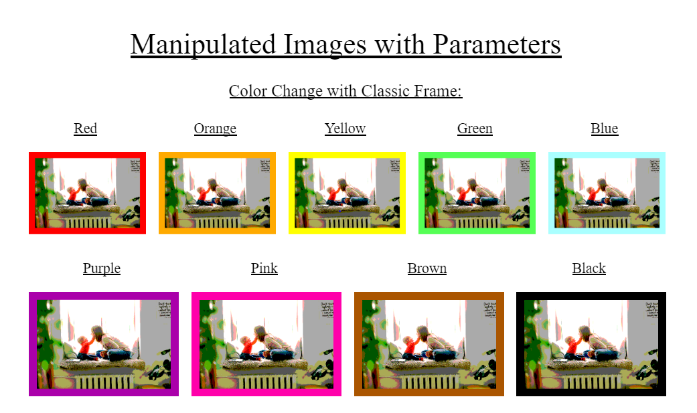

Science Fair Project
Course: Biology, Dublin High School
Date: Taken at DPIE over the summer
of 2018: June 5th to July 13th
Course: Biology, Dublin High School
Date: Taken at DPIE over the summer of 2018: June 5th to July 13th
About the Project: The objective
of this project was to complete a science project or an
engineering project, for a science fair display. My partner
and I chose to complete an engineering project, with the
purpose of creating a prototype of an Air Conditioning
System that automatically works, even when the car is
turned off, in case there is a human inside the car and
the temperature reaches too high. My partner and I shared
all works of this project, including the documentations
and the building of the actual prototype. Through the
project, I learned how to properly document my work for
the first time. I did background research, created a
report document,
and I wrote an abstract.
I also learned how to code using Mindstorms software, to
create a working machine with gears. I also practiced my
skill of communication, so that my partner and I could
properly present to the judges during the fair. In the
project, there were some coding problems that my partner
and I had to overcome, as the temperature sensor coding
was difficult to write. However, by using different sources
and by experimenting, my partner and I were able to overcome
this problem. The project clearly highlighted my teamwork
and leadership skills as well. I easily collaborated with
my partner so that the project work got done as efficiently
as possible. I mainly communicated to our teacher about
our projects, showing my leadership skills.
MIT App Inventor Project
Course: Computer Science Principles, Dublin High School
Date: September 2018 - October 2018
About the Project: The objective
of this project was to modify a game and create a better,
more user-friendly version, making an app using the MIT
App inventor software. My partner and I chose a game
called “Oh My Spikes”, where the user taps the screen
in order to make the bird jump in the air, and to
successfully take the bird to the other side of the
screen without hitting any obstacles. We modified this
game to make the bird fly smoother, add more obstacles,
and add a power function. My partner and I shared all
works of this project, including the documentations and
the making of the app. We took turns being the driver
(instructs which blocks to use) and coder (uses the blocks).
In this project, I learned to properly comment my work.
I added detailed comments for each block to explain their
functions. Also, I improved my documenting skills, and
made a research document.
In the project, there were
some coding problems that my partner and I had to overcome,
as there was a constant glitch in the obstacles, which
kept disappearing and reappearing. However, my partner
and I were able to solve this problem when we looked into
the code deeper. The project highlighted my teamwork and
leadership skills as well. I easily collaborated with
my partner so that the project work got done as efficiently
as possible. I took charge of the documentation and turning
it it, showing my leadership skills.

Python Image Manipulation Project
Course: Computer Science Principles, Dublin High School
Date: February 2019 - March 2019
About the Project: The
objective of this project was to modify images to suit a
chosen client’s needs. My partner and I chose to modify
our images to fit a Family Client’s needs. We used python
manipulations in order to give different options to our
users when modifying their pictures - we gave different
color options, and different frame border options (see
picture to the side). My partner and I shared all works
of this project, including the documentations and the
coding. I added many comments throughout the codes, and
updated the daily log with good detail. This helped me
learn how to properly log my progress with detail. Also,
I greatly improved my documenting skills, making a
professional looking research document. We
encountered a problem in the project. Our raw-input
function did not work the way we wanted it to,
originally. However, through trial and error in the code,
we were able to solve this problem. The project highlighted
my teamwork and leadership skills as well. I easily
collaborated with my partner so that the project work got
done as efficiently as possible. I took charge of the
documentation and turning in the project, which
highlighted my leadership skills.